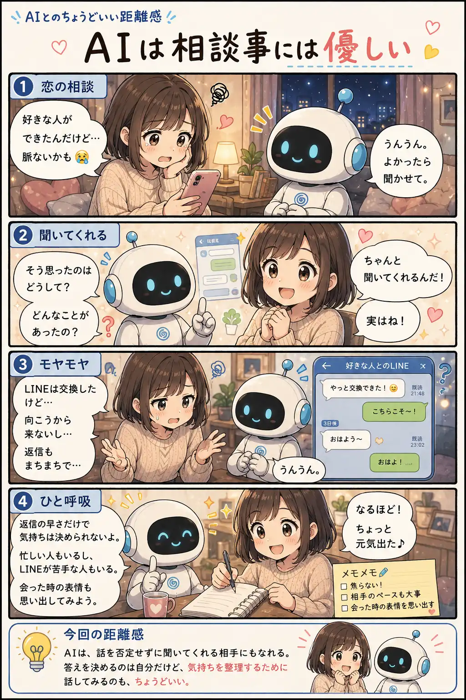

#057
AIは相談事には優しい
恋の答えではなく、気持ちの整理をくれた。

メモ
AIに恋愛相談なんて、少し変に感じるかもしれません。
でも、誰かに話す前の気持ちの整理には、意外と向いています。否定せずに聞いてくれて、出来事を一緒に並べ直してくれるからです。
もちろん恋の答えをAIに決めてもらう必要はありません。ただ、一人で不安を膨らませる前に、話し相手として使ってみるくらいなら、ちょうどいい距離感かもしれません。
今回の距離感
AIは、話を否定せずに聞いてくれる相手にもなれる。答えを決めるのは自分だけど、気持ちを整理するために話してみるのも、ちょうどいい。